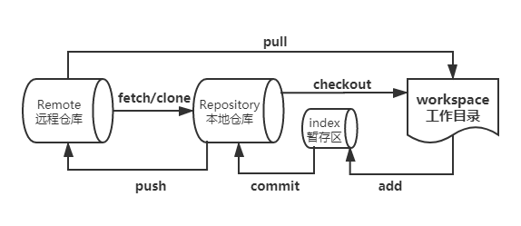
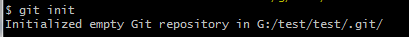
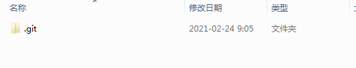
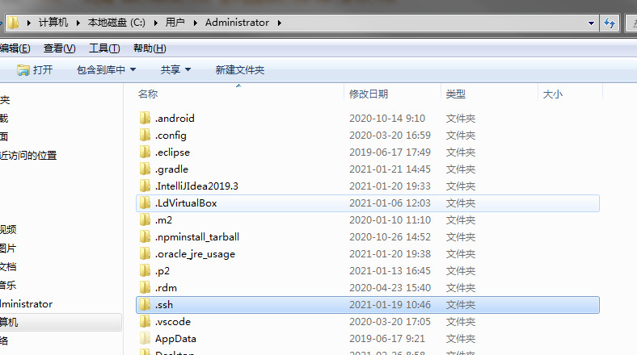
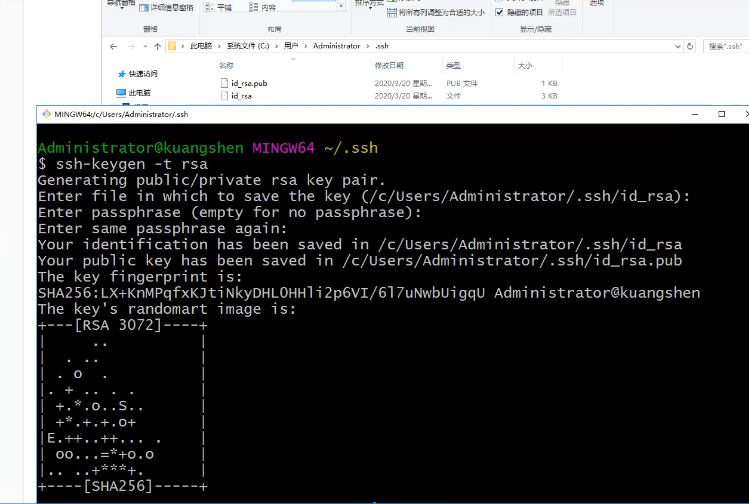
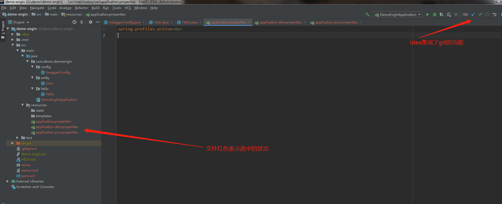

git项目搭建
创建工作目录与常用指令

本地搭建仓库
1 | git init |
提示初始化一个空的git库在G:/test/test/.git/

此时运行命令的位置会有

克隆远程仓库
1 | # 克隆整个项目及其整个代码历史(版本信息) |
git文件操作
文件4种状态
- Untracked: 未跟踪, 此文件在文件夹中, 但并没有加入到git库, 不参与版本控制. 通过
git add状态变为Staged - Unmodify: 文件已经入库, 未修改, 即版本库中的文件快照内容与文件夹中完全一致. 这种类型的文件有两种去处, 如果它被修改, 而变为
Modified. 如果使用git rm移出版本库, 则成为Untracked文件 - Modified: 文件已修改, 仅仅是修改, 并没有进行其他的操作. 这个文件也有两个去处, 通过
git add可进入暂存staged状态, 使用git checkout则丢弃修改过, 返回到unmodify状态, 这个git checkout即从库中取出文件, 覆盖当前修改 - Staged: 暂存状态. 执行
git commit则将修改同步到库中, 这时库中的文件和本地文件又变为一致, 文件为Unmodify状态. 执行git reset HEAD filename取消暂存, 文件状态为Modified
查看文件状态
1 | git status |
使用该命令查看本地新搭建的项目时，显示内容为：
1 | // 当前在master分支 |
新建文件hello.txt 再使用该命令查看，显示内容为：
1 | On branch master |
git add . （提交所有文件到暂存区）
1 | On branch master |
git commit -m （提交暂存区的内容到本地仓库）
1 | On branch master |
忽略文件
有些时候我们不想把某些文件纳入版本控制中,比如数据库文件,临时文件,设计文件等
在主目录下建立”.gitignore”文件,此文件有如下规则:
- 忽略文件中的空行或以井号( # )开始的行将会被忽略。
- 可以使用Linux通配符。例如:星号(* )代表任意多个字符,问号( ? )代表-个字符,方括号( [abc] )代表可选字符范围,
大括号( string1，string2，…. )代表可选的字符串等。 - 如果名称的最前面有一个感叹号(!) , 表示例外规则,将不被忽略。
- 如果名称的最前面是一个路径分隔符 (/) ,表示要忽略的文件在此目录下,而子目录中的文件不忽略。
- 如果名称的最后面是一个路径分隔符(1) , 表示要忽略的是此目录下该名称的子目录,而非文件(默认文件或目录都忽略)。
1 | #为注释 |
使用码云
==github==是有墙的，比较慢，在国内的话一般使用==gitee==，公司中有时候会搭建自己的==gitlib==服务器
设置本机绑定SSH公钥，实现免密登录
- 位于
C:\Users\Administrator\.ssh目录下

- 生成公钥
ssh-keygen -t rsa
- 生成后产生两个文件，
以pub结尾的为公钥，另外一个为私钥

- 将公钥粘如码云 设置 -> 安全设置 -> SSH公钥
idea集成git
新项目中集成git
在码云中创建项目并拉到本地
新建项目
将码云中拉取得项目的内容全部复制到新建的项目中

提交代码到远程
1 | git add . |
GIT分支
多个分支并行执行(不重合)，代码就不冲突，也就是同时存在多个版本
1 | # 列出所有本地分支 |
==master主分支应该非常稳定,用来发布新版本, 一般情况下不允许在上面工作，工作一般情况下在新建的dev分支上工作,工作完后,比如: 要发布,或者说dev分支代码稳定后可以合并到主分支master上来。==